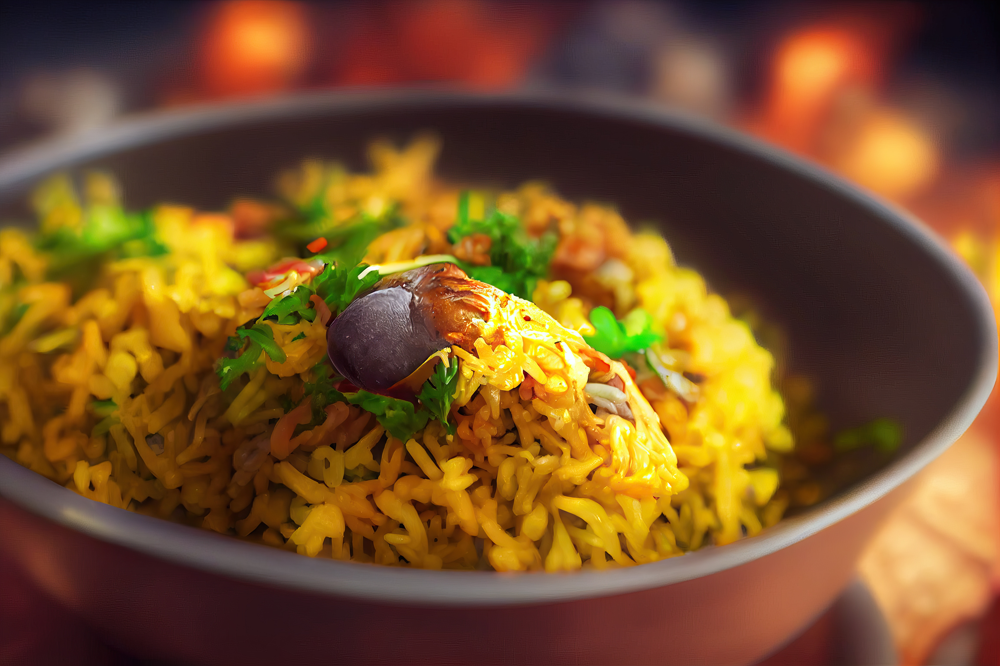
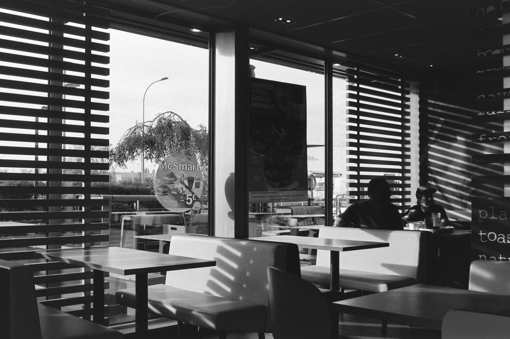

Delicious Naan Bread
Freshly baked naan bread, perfect for scooping up flavorful curries.

Spicy Biryani
Aromatic rice dish with tender meat and a blend of spices.

Juicy Burger
A mouth-watering burger with grilled patty, fresh vegetables, and tangy sauces.

Refreshing Lassi
Traditional yogurt-based drink, available in sweet or salty flavors.
About Us

Welcome to Desi Indian Restaurant
Passionate About Authentic Indian Cuisine
At Indian Delicacy Restaurant, we bring the vibrant flavors of India to your table. Our menu features a diverse selection of traditional Indian dishes, including main courses, fast-food items, beverages, and desserts. Whether you're in the mood for a hearty biryani, crispy samosas, or a refreshing lassi, we have something to satisfy every craving. Join us for a culinary journey through India, where every dish is crafted with love and authenticity.